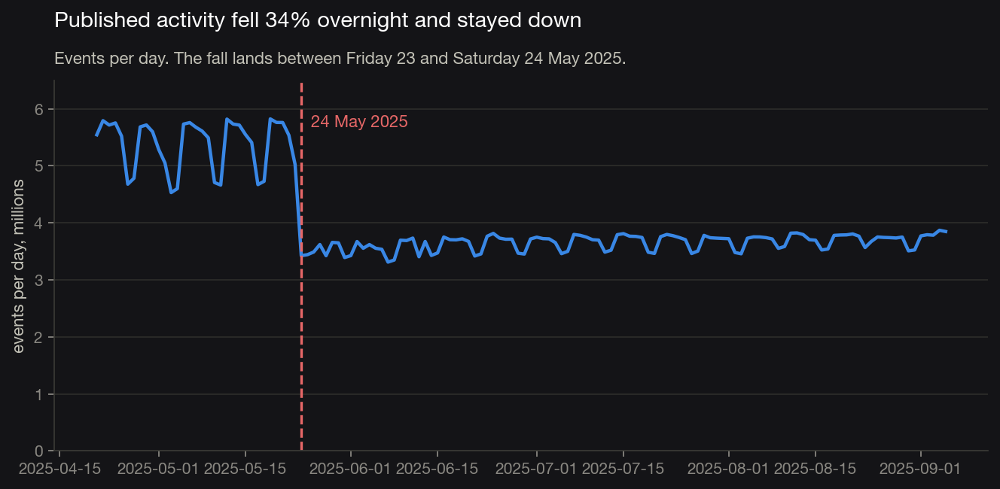
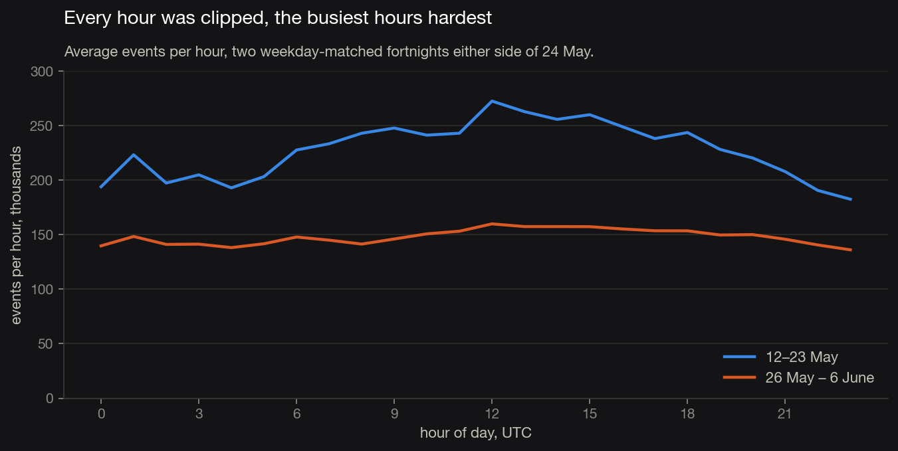
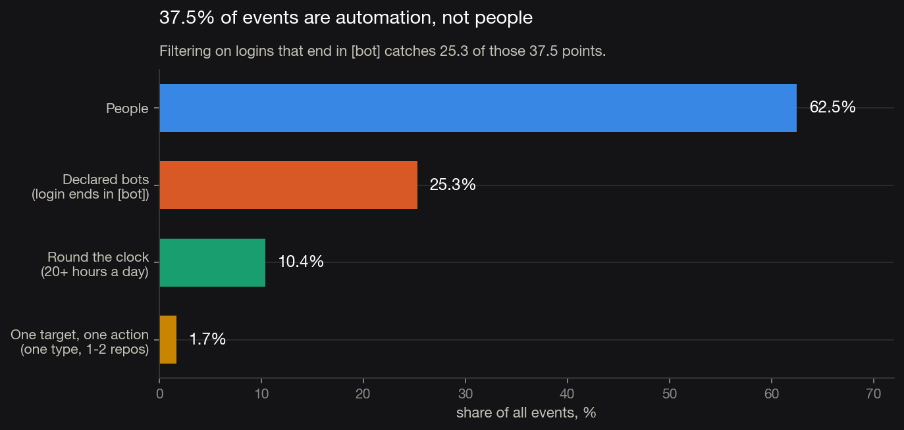
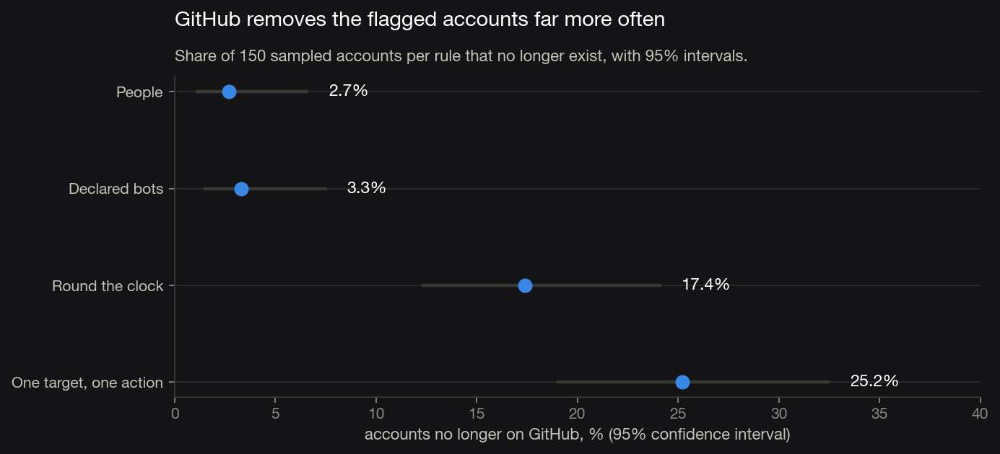

Data quality · GitHub public events
No. Nothing happened to users. The pipeline started throttling — and a third of what was still arriving had never been human in the first place.
[bot]", finds only 25.3 of those
37.5 points.Duplicates, missing values, broken types — run on 108 million rows from June 2025, it returns 47 duplicated rows and nothing missing. That is 0.00004%.
If cleaning stopped there, the conclusion would be "the data is clean". The checklist tests whether the data is well-formed. It says nothing about whether it is true.
Before 24 May the line has a shape: weekdays at 5.5–5.8M, weekends lower. That is a human rhythm. Then it falls 34% between a Friday and a Saturday and runs flat for three months. Users do not leave overnight and in unison.

Every event type fell by the same third — pushes −34.7%, pull requests −31.1%, stars −35.4%, issues −35.7%. So did every kind of account. A real change in how people work does not move code review and stars by the same number.
The hour-of-day view shows why: the shape of the day flattens against a lid. Peak-to-trough was 1.49× before and 1.17× after. Anyone measuring when peak load happens would now get a 22% different answer, with nothing about users having changed.

Three rules, each catching what the previous one misses: accounts GitHub itself marks as bots; accounts active 20+ hours a day; accounts doing hundreds of events of one type into one or two repositories. The volume floor sits far above people — the median account produces 2 events a day.
The standard filter finds two thirds of the problem. The rest
are ordinary user accounts running scripts, which GitHub has no reason to mark.
One of them, freefastconnect, pushed to a single repository 1.8
million times across 114 days.

The API cannot confirm these are bots — it reports "type": "User",
which is correct. So the check had to come from elsewhere: does GitHub eventually
remove them? I sampled 150 accounts per rule and asked.
Flagged accounts are 8 to 12 times more likely to be gone (Fisher exact, p = 1.4 × 10⁻⁵ and 3.9 × 10⁻⁹). That is corroboration, not proof — but it rules out the rules firing at random.

[bot] alone, and re-run the behavioural rules
quarterly — the biggest undeclared account here did not exist two years ago.How I would know it worked: take the ten metrics on the main dashboard, compute the automation share and the completeness check across two years of history, and count how many past decisions would have gone differently. That is the number to put in front of the team.